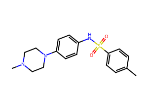

Export and report
Static preview of what Export (CSV, SDF) and Report (PDF) will contain. Built from fixture data. Nothing is generated or downloaded in this build.
FIXTURE preview. Every value below is illustrative layout content from the fixture project, not a model result.
Export
CSVTable of predictions
SDFStructures with properties
Report (PDF)
The PDF has one page per compound: 2D structure, 3D conformer image labeled as computed, every property with its interval or calibrated probability, N and sample size, the ranking breakdown, and the disclaimer on every page.
Page preview (fixture)
